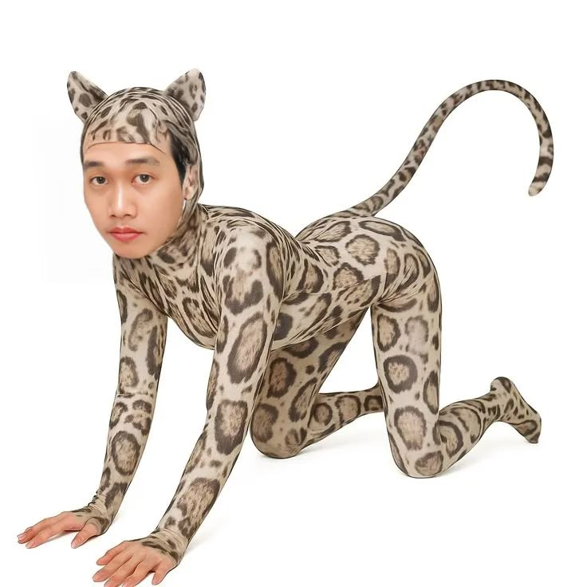
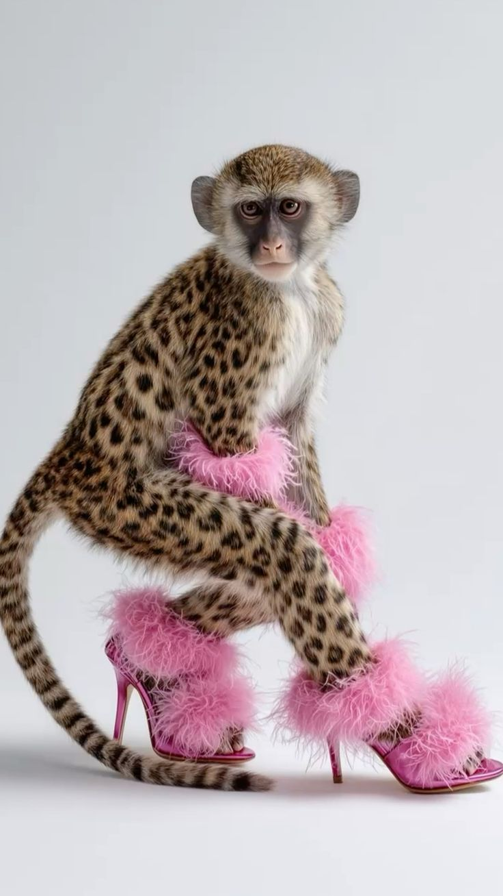
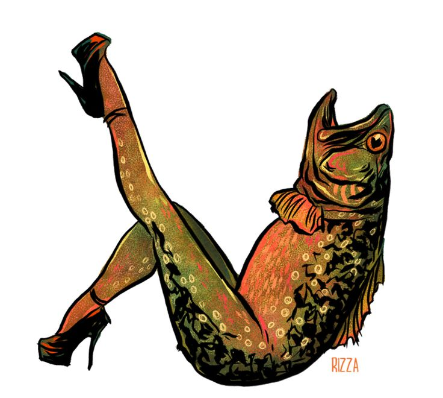
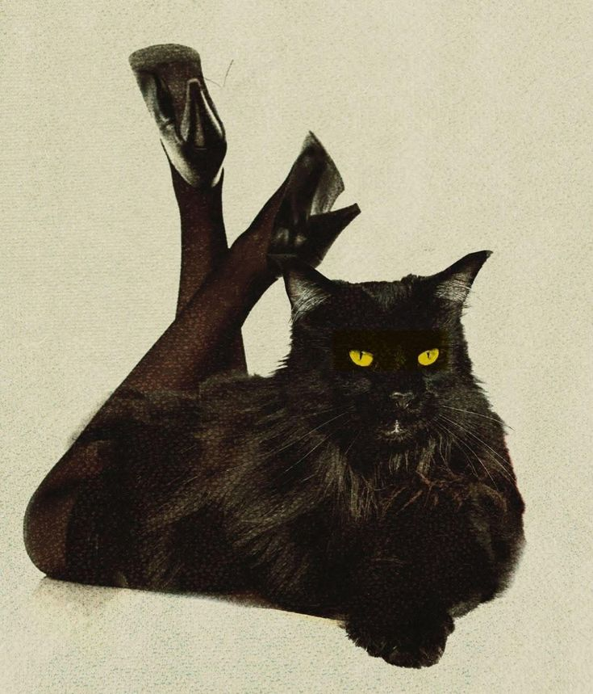
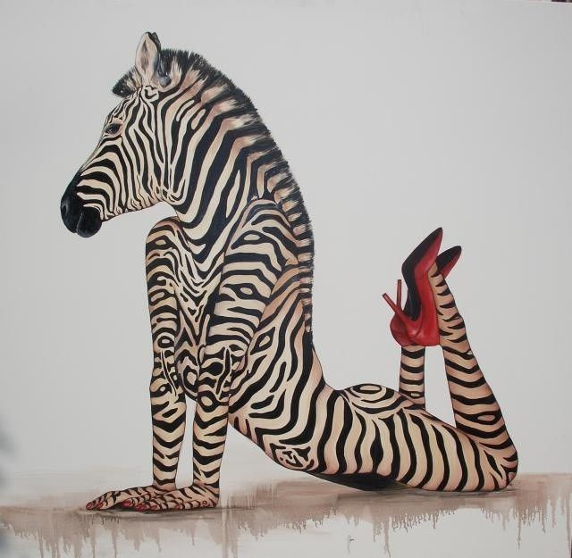
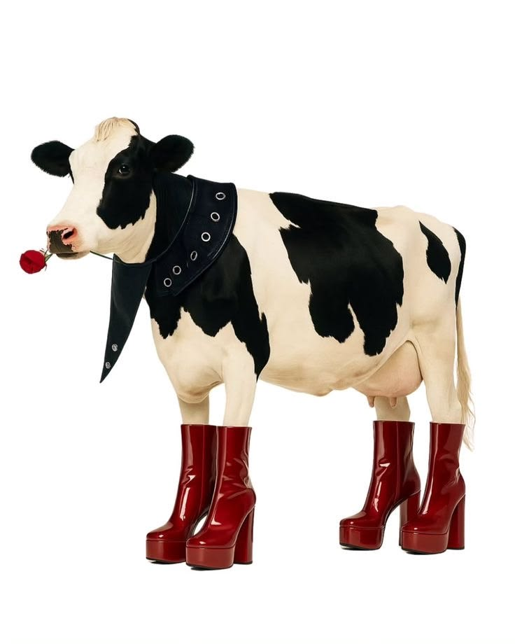

超現實組合
把動物特徵與人類時尚元素並置，讓不合理的組合產生新的吸引力。
WILD × FASHION × SURREAL
野一點，反而更時尚。

ABOUT LAMEI
LaMei 是一場關於「動物 × 人類 × 時尚」的視覺實驗。 我們保留動物原本的個性與特徵，再加入高跟鞋、絲襪、配件與誇張姿態， 讓荒謬、性感與高級感同時存在。不是單純讓動物穿上衣服， 而是想像牠們如果也有自己的時尚態度，會是什麼樣子。
ANIMAL FASHION GALLERY





NO RULES.
JUST ATTITUDE.
DESIGN LANGUAGE
把動物特徵與人類時尚元素並置，讓不合理的組合產生新的吸引力。
透過表情、動作與姿勢，讓每個動物角色擁有不同個性與態度。
在可愛、性感、荒謬與高級感之間製造反差，形成 LaMei 的視覺識別。